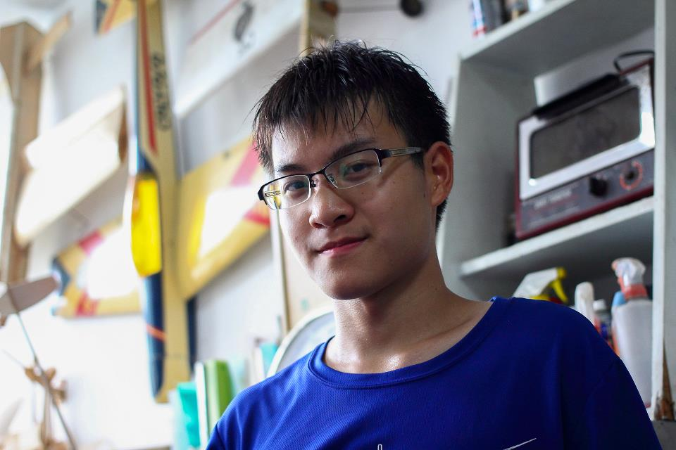

Ting-Hao Wang (王霆皓)
I am a Ph.D. candidate in Mechanical Engineering at the University of California, Berkeley, advised by Prof. Mark W. Mueller at the High Performance Robotics Lab (HiPeRLab). My work centers on developing efficient path-planning algorithms and novel quadcopter configurations for improved performance navigating in cluttered and unstructured environments.
I earned my B.S. and M.S. from National Taiwan University, where I developed TurboQuad, an innovative leg-wheel transformable robot capable of autonomous behavioral transitions according to the surroundings.

Projects

TurboQuad: A Leg-Wheel Transformable Quadruped Robot
A novel leg-wheel transformable robot capable of autonomous gait selection and obstacle avoidance
using real-time RGBD visual feedback. Features a unique mechanism enabling agile transitions between
wheeled and legged locomotion, with terrain classification achieving over 95% accuracy via a CNN-based
vision system. Recognized as a top-3 finalist in the 2017 NI Global Student Design Showcase.

Autonomous Wheeled Robot with 7-DOF Robotic Arm
Fully autonomous wheeled vehicle mounted with a 7-DOF robotic arm, built for Taiwan's largest
robotics competition in 2015. Integrated forward/inverse kinematics for arm trajectory planning and fused
imagery with distance sensors for precise vehicle localization. Completed tasks including
penmanship, color classification, basketball picking and shooting. Our teanm won 3rd place in autonomous group, in 2015 TDK Robocon.

Inverted Pendulum Car
A self-balancing two-wheeled vehicle with an inverted pendulum. Derived the physical model for
stability analysis and applied feedforward control to maintain balance under various perturbations
and external loads.

Autonomous Parking System
Autonomous parking system using real-time image processing to identify and localize color-coded
parking spaces, then plan and execute the parking maneuver entirely onboard.

FlexiRehab: Portable Rehabilitation Feedback Module
A clip-on module that attaches to standard resistance bands to bring quantifiable,
objective data to physical therapy. Using a built-in load cell and IMU, the device measures
and records tension force, tracks pitch and angle of movement, auto-starts a timer, and counts
repetitions via vertical acceleration, delivering real-time feedback on an onboard LCD display.
Publications
- D. Zhang, A. Loquercio, J. Tang, T.-H. Wang, J. Malik, M. W. Mueller, "A Learning-based Quadcopter Controller with Extreme Adaptation," IEEE Transactions on Robotics (T-RO), 2025. pdfdoi
- L. R. Rubi, J. Kam, R. Luo, J. Yang, X. Zheng, E. Zou, T.-H. Wang, M. W. Mueller, "UCAirLink: A VTOL-Based Air Transportation System for Optimizing Commuter Efficiency," Vertical Flight Society Forum Proceedings, 2025. pdfdoi
- T.-H. Wang and P.-C. Lin, "A Reduced-Order-Model-Based Motion Selection Strategy in a Leg-Wheel Transformable Robot," IEEE/ASME Transactions on Mechatronics (T-MECH), vol. 27, no. 5, pp. 3315–3321, Dec. 2021. pdfdoi
- H.-Y. Chen, T.-H. Wang, K.-C. Ho, C.-Y. Ko, P.-C. Lin, P.-C. Lin, "Development of a Novel Leg-Wheel Module with Fast Transformation and Leaping Capability," Mechanism and Machine Theory, vol. 163, 104348, Sep. 2021. pdfdoi
- C. Liu, T.-H. Wang, P.-C. Lin, "Development of an Innovative 2-DOF Continuous-Rotatable Mechanism," International Symposium on Robotics and Mechatronics (ISRM), vol. 78, pp. 125–137, Oct. 2019. pdfdoi
- S. L. Hsu, K. W. Liu, C. H. Hsiung, S. Y. Chen, T.-H. Wang, P.-C. Lin, "Flip-and-Leap in a Hexapod Robot," iRobotics, 2019. pdf
- T.-H. Wang, D. G. Sung, P.-C. Lin, "Terrain Classification, Navigation, and Gait Selection in a Leg-Wheel Transformable Robot Using Environmental RGBD Information," International Automatics Control Conference (CACS), Nov. 2018. pdfdoi